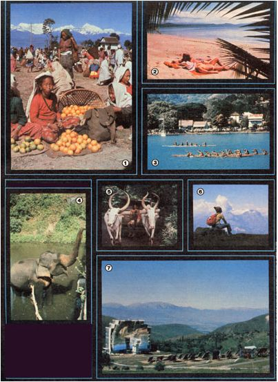

For learning, leisure, laughter, relaxation, recreation, friendship, and fun . . .
If you have a yen to break away from your routine and do something exciting and educational, MOTHER's "tours that teach" can provide just the opportunity you're looking for. When we decide, you see, on an expedition's destination and theme, certain very strict criteria are always kept in mind.
For example, the theme of the trip must be within the magazine's spheres of interest, and the journey must be one that our well-informed and independent readers couldn't duplicate easily on their own. Then too, by focusing each trip on a specific topic, we strive to attract likeminded people, folks who'll return home enriched by new knowledge and adventures and with friendships that will last long after the tour has ended. Finally, we hope each trip will enable our staff to share-with readers who were not able to participate-some of the experiences and the practical information gained en route (check out the article "Sichuan's Home-Scale Biogas Digesters", which appears on page 120 of this issue).
SRI LANKAN SERENDIPITY
MOM's next excursion (which we will cosponsor with the environmental tour group, Journeys) will run from July 4 to 24, 1981 and take us to the Sanctuaries of Sri Lanka. This large, Indian Ocean island (formerly known as Ceylon) is always warm and breezy . . . bordered by palm-lined beaches . . . and endowed with an abundance of precious stones, wildlife, and exotic flora. Nearly 25 centuries after Buddhism was introduced here, its doctrine of peace and tolerance is still preserved in its purest form . . . and that fact is reflected in the island's calm and serene countryside, and in its gentle people and their enticingly simple lifestyles.
Our travelers will explore Sri Lanka's unusual national parks, archaeological sites, and other diverse natural areas. We'll have a chance to learn about local cultures and traditions through firsthand experience, and-since the group will include a maximum of 15 members-we'll be able to obtain access to places not available to folks traveling with conventional larger tours.
Also, since the trip is conducted in cooperation with the Sri Lanka Nature and Wildlife Protection Society, part of your fee will be earmarked to help support the society's ecological projects, including its sea turtle hatcheries (which we'll visit). You'll also have opportunities for swimming, snorkeling, nature observation, photography, visiting many Hindu and Buddhist religious sites, guided and independent hiking, and mingling with local people.
We believe that our package is about the most comprehensive, personal, and adventurous group trip to Sri Lanka available, and it's the only tour that provides direct support to environmental conservation on this delightful "isle of smiles". To sign up, just send your full payment ($2,470, which includes roundtrip airfare from New York, land costs, accommodations, and most meals) by June 1.
SOLAR IN ENGLAND AND/OR FRANCE
On the other hand, you have until July 22 to let us know if you want to join a Solar Tour to England and/or France (it'll run from August 22 through September 6, 1981), cosponsored with Jordan College. Those who choose England will attend the "Solar World Forum" International Solar Energy Society Congress and Exhibition (August 23-28) in Brighton . . . which will bring together international researchers in sun energy, and showcase many of the latest advances in solar technology.
Furthermore, you have the option of either attending the ISES Congress and touring part of England (August 22-30) . . . or traveling through France (August 29 to September 6) . . . or combining both trips. And, although the primary purpose of this tour is to study solar energy advances in the two countries, it would be inexcusable not to see some of the nations' intriguing historical sites as well. Therefore, the itinerary includes such extras as sightseeing in London and Paris and a Shakespearean play at Stratfordon-Avon. There will also be plenty of free time to explore on your own . . . sun in famous Riviera resorts . . . and enjoy Monte Carlo's night life.
The price, including round-trip airfare from New York (not from Chicago as was previously announced) and all other costs except lunches and dinners, is $1,549 per person for England or France, and $2,580 per person for both. A $200 deposit is required for a reservation.
A POLYNESIAN FEAST
Although it's still over six months in the future (November 27 to December 11, 1981), our South Seas Seminar in Tahiti, Bora Bora, and Raiatea-with Anne and Paul Ehrlich and John and Cheryl Holdren-is proving to be the most popular of our 1981 travel offerings . . . and it's easy to understand why.
After all, the opportunity to combine the study of the ecology of tropical reef fishes in some of the Pacific's most beautiful coral gardens with participation in evening lectures on ecological subjects of world importance-and have plenty of free time to relax and enjoy a legendary Polynesian paradise-may never come again.
This "dream vacation" costs $2,295, including airfare from Los Angeles, land costs, accommodations, the majority of your meals, and the seminars . . . and a $100 deposit will hold a place.
A TOP-OF-THE-WORLD TREK
Another exclusive tour put together by MOTHER and Journeys (again, only 15 people can come along) will be a 24-day Arun Valley Trek through the mystical Himalayas (January 25 to February 17, 1982). As we travel alternately in valleys and along ridge tops, we'll visit self-sufficient farms of the many cultural groups who live in this region, including Brahmins, Chhetris, Sherpas, and Tamangs. We'll talk with them about their lives and provide conservation materials and vegetable seeds in appreciation for their hospitality.
But, for much of the trek, we'll leave the village civilization behind and follow an abandoned Tibetan trade route along a high ridge. As we explore this extremely isolated area, seldom visited by Westerners or Nepalese, we'll be hoping to encounter signs (or even a glimpse!) of the legendary yeti (Abominable Snowman and the almost equally elusive snow leopard, while we enjoy seeing an abundance of more common fauna and flora.
This is not in any way a conventional guided tour. We'll be relying on each other and sharing the responsibility for the success of the trip. And, given the nature of the terrain we'll cover, previous hiking and camping experience is required. In addition, participants must be at least 18 years old and in excellent physical and mental health.
The estimated comprehensive cost is $2,785 (including round-trip airfare from New York) . . . and a deposit of $300 is required to assure your participation in this unique adventure.
WILD PLANTS IN THE ALPS
A less strenuous but equally exciting trip is our June 11-26, 1982 Wild Plant Walk in the European Alps. After flying into Munich, we'll explore-by train and Wanderwege (walking trails)-the flower-filled mountain slopes near Salzburg, Kitzbiihel, Innsbruck, Liechtenstein, Zurich, Lucerne, and Lake Geneva, learning about the wild foods and herbs that abound in the Tirolean, Swiss, and Bavarian Alps.
Our accommodations will be in tents, mountain huts, hostels, and-occasionally-quaint local pensions. In fact, we'll experience Alpine life as the area's natives do . . . not as tourists. And the cost for this 16-day tour-including airfare, all camping equipment, lodgings, land transportation, and two meals a daywill be approximately $2,000, with a $200 deposit required.
Space doesn't permit us to describe all the features of this latest tour plan, but we'll be happy to send you a brochure with additional information . . . as well as itineraries of our other trips. Or, if you've already decided on the part of the world you'd like to experience, send your deposit by certified check or money order to Mother's Tours, P.O. Box 70, Hendersonville, North Carolina 28791 . . . and we'll return half of it should you cancel at least 30 days prior to the departure date.
|
 [1] Tangerines for sale at the Chinpur, Nepal market. [2] A busy afternoon in the South Seas. [3] You can learn to paddle a native canoe. [4] Sri Lankan elephants still roam mild. [5] Bullock carts are common in rural Sri Lanka . . . [6] as are spectacular views in the Austrian Alps. [7] A solar furnace in Odeillo, France |
|
|